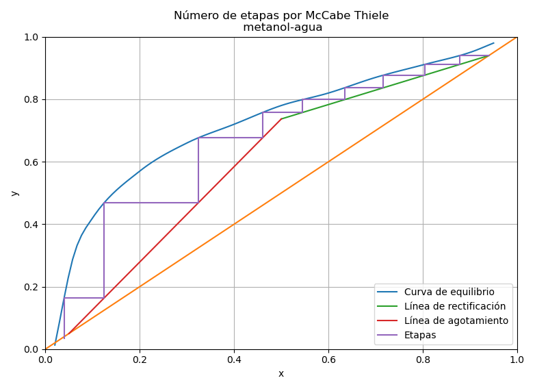

Introducción
El método gráfico de McCabe Thiele es usado para calcular el número de etapas en una destilación binaria, este método asume que:
- La columna de destilación es adiabática.
- Por cada mol de vapor condensado hay un mol de liquido que se evapora.
- La variación del calor sensible es despreciable en comparación de calor latente.
- El calor de vaporización es el mismo para ambos componentes, independientemente de la concentración.
- El calor de mezcla es despreciable.
Para el primer ejemplo se utilizara datos experimentales de la curva de equilibrio y-x, siendo x, y las fracciones molares del componente más volátil.
Las ecuaciones que gobiernan el método de MCCabe Thiele son:
Línea de rectificación
Con que es el fracción de reflujo.
Línea de Alimentación
Donde que es la calidad de vapor de la alimentación.
Línea de Agotamiento
La línea de agotamiento (), también puede obtener vía las siguientes ecuaciones:
Obtenemos la intersección de las línea de rectificación y de alimentación
Con el punto de intersección y , podemos contruir la línea de agotamiento
Cálculo del reflujo mínimo
El reflujo mínimo puede ser calculado como sigue:
Ejemplo
Se requiere alimentar una columna de destilación una corriente de agua y metanol a un flujo de 1000 mol/h con 0.5 de fracción molar de metanol en su punto de burbuja, estime el número de etapas requeridas si se quiere obtener un destilado de 0.94 en fracción molar de metanol y un condensado al 0.05 en fracción molar de metanol. use el método de McCabe Thiele para la estimación del número de etapas,considetando el el reflujo es igual a 1.5 veces el reflujo mínimo.
Considere los siguientes datos como la curva de equilibrio y-x.
Para resolver el ejercicio vamos necesitar de interpolar muchas veces la curva de equilibrio, por lo que vamos interpolarla de una serie de datos interpolados con el método de interpolación cúbica monotónica de Hermite.
import math
import numpy as np
def h00(t):
return 2*t**3-3*t**2+1
def h10(t):
return t**3-2*t**2+t
def h01(t):
return -2*t**3+3*t**2
def h11(t):
return t**3-t**2
def pchint(x, y, x0):
n = len(x)
d = np.zeros(n-1)
for i in range(n-1):
d[i] = (y[i+1]-y[i])/(x[i+1]-x[i])
m = np.zeros(n)
m[0] = d[0]
m[-1] = d[-1]
for i in range(1, n-1):
if d[i-1]*d[i] < 0:
m[i] = 0
else:
m[i] = (d[i-1]+d[i])/2
for i in range(n-1):
if y[i] == y[i+1]:
m[i] = 0
m[i+1] = 0
for i in range(n-1):
if m[i] != 0:
alfa = m[i]/d[i]
beta = m[i+1]/d[i]
condicion = alfa - ((2*alfa+beta-3)**2)/(alfa+beta-2)/3
while condicion < 0:
tau = 3/math.sqrt(alfa**2+beta**2)
alfa = tau*alfa
beta = tau*beta
m[i] = alfa*d[i]
m[i+1] = beta*d[i]
condicion = alfa - ((2*alfa+beta-3)**2)/(alfa+beta-2)/3
pos = 0
c = 0
F = np.zeros(len(x0))
for xi in x0:
if xi > x[pos+1]:
pos += 1
delta = x[pos+1]-x[pos]
t = (xi-x[pos])/delta
F[c] = y[pos]*h00(t)+delta*m[pos]*h10(t)+y[pos+1]*h01(t)+delta*m[pos+1]*h11(t)
c += 1
return F
Con el algoritmo de interpolación definido podemos codificar en python. Puede descargar los datos de equilibrio aquí, guardelo con el nombre de agua-metanol.csv
from hermite import pchint
import numpy as np
import matplotlib.pyplot as plt
import csv
def open_data(location):
x, y = [], []
with open(location, "r") as f:
reader = csv.DictReader(f)
for row in reader:
x.append(float(row["x"]))
y.append(float(row["y"]))
return x, y
def eq_line(a, b):
return lambda x: a + b * x
# Obteniendo la curva interpolada
def inter_vline(x, data_x, data_y):
n = len(data_x)
i, j = 0, n - 1
while (j - i) >= 2:
m = (j + i) // 2
if data_x[m] > x:
j = m
else:
i = m
slope = (data_y[j] - data_y[i]) / (data_x[j] - data_x[i])
origin = -slope * data_x[i] + data_y[i]
line2 = eq_line(origin, slope)
return x, line2(x)
def inter_line(line, data_x, data_y):
n = len(data_x)
i, j = 0, n - 1
while (j - i) >= 2:
m = (j + i) // 2
if (data_y[m] - line(data_x[m])) * (data_y[j] - line(data_x[j])) < 0:
i = m
else:
j = m
slope = (data_y[j] - data_y[i]) / (data_x[j] - data_x[i])
origin = -slope * data_x[i] + data_y[i]
line2 = eq_line(origin, slope)
f1 = line2(0) - line(0)
f2 = line2(1) - line(1)
x_in = f1 / (f1 - f2)
y_in = line(x_in)
return x_in, y_in
def reflux_min(x_in, y_in, x_D):
k = (x_D - x_in) / (x_D - y_in)
R = 1 / (k - 1)
return R
def solve_mccabe_thiele():
data_x, data_y = open_data("agua-metanol.csv")
# obtención de datos interpolados
x0 = np.linspace(data_x[0], data_x[-1], 100)
y0 = pchint(data_x, data_y, x0)
xF = 0.5
xD = 0.94
xW = 0.05
x_int, y_int = inter_vline(xF, x0, y0)
r_min = reflux_min(x_int, y_int, xD)
r = 1.5*r_min
line_recti = eq_line(xD/(r+1), r/(r+1))
yF = line_recti(xF)
slope = (xW - yF) / (xW - xF)
origin = -slope * xF + yF
line_strip = eq_line(origin, slope)
xe = []
ye = []
xp = xD
xe.append(xD)
ye.append(xD)
etapas = 0
while xp > xW:
line_xpn = eq_line(xp, 0)
xpn, xp = inter_line(line_xpn, x0, y0)
etapas += 1
ye.append(xp)
xe.append(xpn)
if xpn > xF:
xp = line_recti(xpn)
else:
xp = line_strip(xpn)
ye.append(xp)
xe.append(xpn)
print("etapas", etapas)
x_rect = np.linspace(xF, xD, 50)
y_rect = np.array([line_recti(x) for x in x_rect])
fig, ax = plt.subplots()
x_strip = np.linspace(xW, xF, 50)
y_strip = np.array([line_strip(c) for c in x_strip])
ax.plot(x0, y0, label="Curva de equilibrio")
ax.plot([0, 1], [0, 1])
ax.plot(x_rect, y_rect, label="Línea de rectificación")
ax.plot(x_strip, y_strip, label="Línea de agotamiento")
ax.plot(xe, ye, label="Etapas")
ax.set_title("Número de etapas por McCabe Thiele\n metanol-agua")
ax.set_ylabel("y")
ax.set_xlabel("x")
ax.set_xlim([0, 1])
ax.set_ylim([0, 1])
ax.grid()
plt.legend(loc="lower right")
plt.show()
solve_mccabe_thiele()
Ejecutando la gráfica resultante sería:

Referencias
-
McCabe, W. L.; Smith, J. C. (1976). Unit Operations of Chemical Engineering (3rd edición). McGraw-Hill. ISBN 0-07-044825-6.
-
Fritsch & Carlson (1980), Monotone Piecewise Cubic Interpolation, doi:10.1137/0717021.